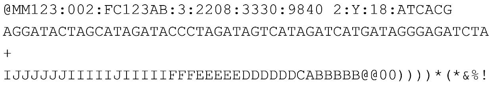

BWA-mem2 (Burrows-Wheeler Aligner) V2.3:
BWA-mem2 githubBWA-mem2 is de methode die op onze website wordt gebruikt om lose DNA-stukjes tegen een referentiegenoom uit te mappen. De eerste stap hierbij is het indexeren van het menselijk referentie genoom.
>>> bwa-mem2 -p [outputfilenaam] index [inputfilenaam]
bwa-mem2 index bouwt een index op van het een referentie-genoom (menselijke genoom voor onze website) dit wordt gedaan door middel van een FASTA-referentiebestand.
Dit is het enigste dat nodig is om DNA data daarna snel te mappen met BWA-mem2. De enige dingen die aan dit commando veranderd kunnen worden is de outputfilenaam en de inputfilenaam. De gebruiker kan hier niet aanzitten, want wij hebben zelf al de index gemaakt van de homo sapiens (mens) referentie genoom van February 3, 2022
>>> bwa-mem2 -t [INT] -k [INT] -w [INT] -c [INT] ref.fa(referentie-genoom) reads.fq(DNA-data) > aln.sam (output-bestand)
Dit commando is wat het dan echt gaat doen. De gebruiker kan dan ook voor dit commando aangeven wat voor dingen zij willen.
Tweaks die de gebruiker zelf kan aan kan passen:
-k: met -k kan de gebruiker kiezen hoeveel nucleotiden minimaal in een keer moeten overeenkomen tussen het FASTQ-bestand en referentie genoom om een match te zijn default=19.
-c: deze optie word gebruikt om aan te geven hoe hoog de kwaliteit moet zijn van de gevonden match. Hoe hoger de -c hoe minder matches je krijgt maar dan zijn ze allemaal wel van hoge kwaliteit. Hoe hoger je dit zet hoe kleiner de output file is, maar met wel beter matches. Default=500
-w: bepaalt hoe ver uit elkaar seeds (matches) mogen liggen om aan elkaar gekoppeld te worden tijdens het vormen van alignments, zie figuur 2 het figuur hiernaast. Grotere -w verhoogt sensitiviteit voor verspreide matches (handig bij grote inserties/deleties of foutrijke reads), default 100 description picture bwa seeds. Hoe hoger de -w hoe langer het duurt tot dat het programma klaar is.
Tweaks die de gebruiker niet kan aanpassen:
-t: geeft aan hoeveel CPU-threads de computer mag gebruiken

Figuur 1: FASTQ file format
Hiervoor moet je een FASTQ-bestand hebben, dit bestand bevat een header/kop die de sequencer heeft gemaakt. Daarna is de DNA-sequentie voor het stukje DNA, hierna komt een "+" om de DNA-sequentie te scheiden van de kwaliteit van het DNA. Daarna komt dan de kwaliteit van het DNA ieder character staat voor een andere kwaliteit. Zo een FASTQ-bestand bevat dan miljoenen verschillende van dit soort koppen met DNA en de DNA zijn kwaliteit scoren.

Figuur 2: FASTQ file format